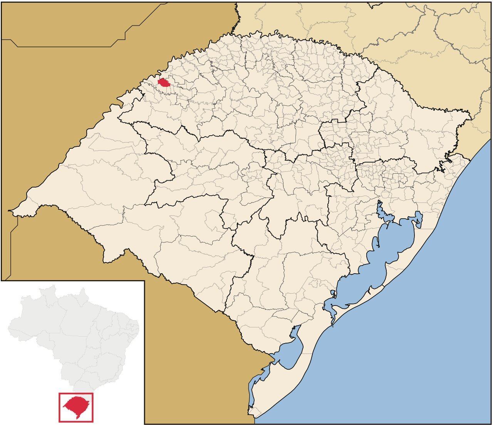

I came to the UK two years ago to do my PhD in Statistics and I am looking forward to starting my career in industry here!
Despite loving my country and people, I do not see myself living there anymore. Just in case you are curious to know from what piece of land I come from, check out the picture below!
This tiny village in red is my hometown, São Paulo das Missões, in South Brazil.
Read more